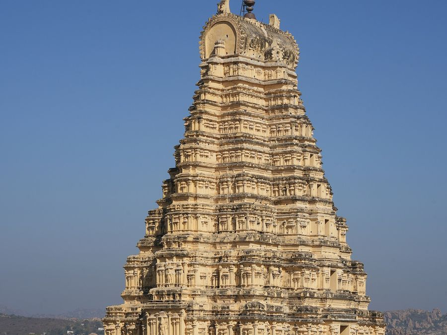

Everything Between 'Yes' and 'Married'
One dedicated turnkey booking covers the entire wedding ecosystem. No direct vendor stress, no administrative friction, and no shortened rituals.
Turnkey Coverage Interactive Configurator
Toggle key operational domains to see how our single dedicated contract orchestrates every ceremonial node without requiring independent third-party vendor coordination.
The Six Pillars of Turnkey Sanctum Operations
Each pillar operates with micro-precision. We manage every interface so you and your families experience only contemplation and celebration.
Temple Permissions & Sacred Trusts
Weddings in protected sanctums require navigating Karnataka Hindu Religious Institutions and Charitable Endowments (Muzrai), ASI heritage regulations and local hereditary temple panchayats. We oversee every formal filing, guarantee deposit and administrative appearance.

Rituals & Vedic Purohit Sangha
A sacred wedding cannot be rushed for convenience. We coordinate senior Vedic scholars versed in your lineage's exact sutra. Whether your families follow Smartha, Madhwa, Sri Vaishnava or specific regional Gotra customs, every homa is celebrated in full metric cadence.
Guest Stay & Heritage Hospitality
Heritage temple towns like Hampi, Nandi village or Madurai require specialised inventory management. We reserve entire boutique heritage estates and design customised room allotments that prioritise elders and ensure comfort for global travellers.

Travel Logistics & Timed Shuttles
Auspicious muhurtas rarely wait for traffic delays. Our logistics command centre synchronises airport meet-and-greets, railhead transfers and pre-dawn convoy departures with minute-by-minute discipline.
Traditional Sattvic Feasts & Kalyana Oota
Food in a temple union is prasad first, feast second. We partner with legacy culinary families who prepare uncompromised, pure-vegetarian sattvic banquets served in respectful traditional sequences on freshly cut, tender banana leaves.
Dawn Makeup, Attire & Heritage Décor
Sanctums have strict architectural regulations: no synthetic backdrops, no nails into ancient granite, no non-biodegradable plastics. We work entirely in biological harmony: pure tuberose, temple jasmine, mango leaves and classic handwoven silks.
"Rituals are never trimmed to fit a budget."
If your community requires 14 samskaras, an unhurried Kashi Yatre, and a 3-hour sacred homa fire before the deity, that is precisely what is celebrated. We do not operate hurried ceremony production lines. Every minute is consecrated according to your family's deepest hereditary beliefs.
Commission Your Custom Scope Blueprint
Share your preferred sanctum, intended dates and guest count. Our senior concierge convenes a consultation session within 24 business hours to deliver an itemised feasibility and investment brief.